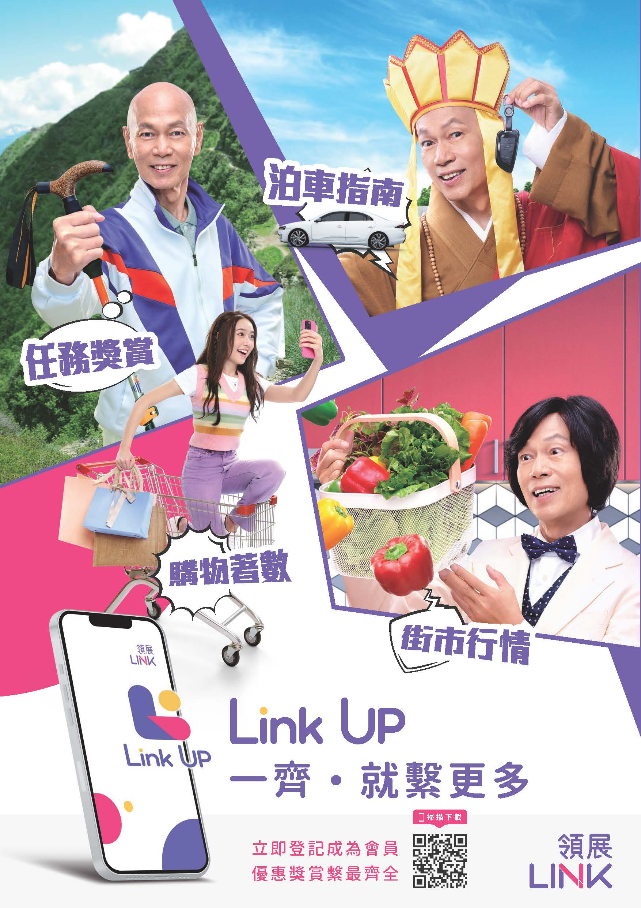
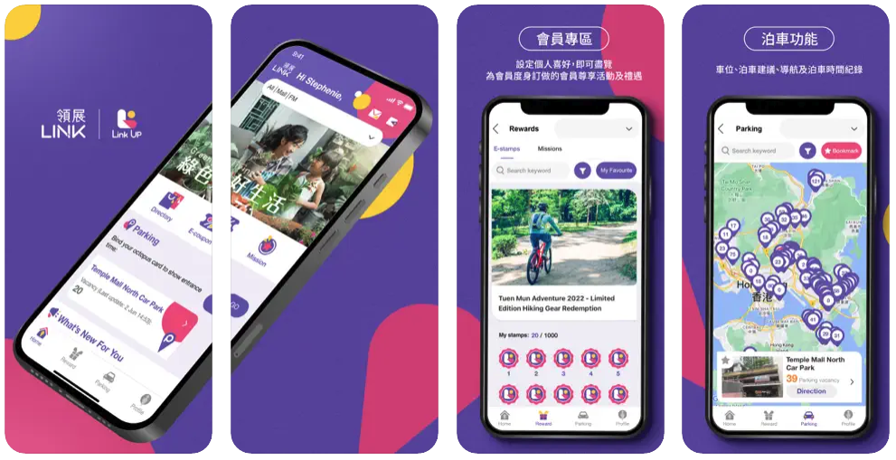

No daily reason to open the app
The previous app mainly showed points and basic information, leaving Link with limited visibility into who shoppers were and what they cared about.
CASE STUDY · LINK REIT · MALL LOYALTY PLATFORM
Link Up brings together membership, customer engagement, promotions and relevant operational integrations for Link REIT’s Hong Kong property portfolio.

THE CHALLENGE
Link REIT set out to evolve Park & Dine from a parking and dining app into Link Up: a digital membership and loyalty platform designed to connect shoppers, tenants, promotions and customer data.
The platform needed to support different merchant operating models, from larger chains with established POS systems to smaller businesses with limited digital infrastructure. It also needed to operate across multiple locations while connecting with established property and parking systems.
THE MALL PROBLEM, AT LINK'S SCALE
The previous app mainly showed points and basic information, leaving Link with limited visibility into who shoppers were and what they cared about.
More than 10,000 merchants, including many small businesses, needed a simple way to put offers in front of the right shoppers.
Promotions, parking and merchant data sat in separate legacy systems, making portfolio-wide campaigns difficult to launch quickly and reliably.

THE SOLUTION
Motherapp helped Link REIT create a foundation for membership, CRM, campaign management, rewards and tenant participation. The platform can support mall-specific, cross-mall, category-based and brand-based offers from one connected programme.
HOW ONE WORKS FOR LINK
Real-time parking became an everyday reason to open the app: live space counts, Octopus card linking and in-app payment. At sign-up, members can share their work location, driving status, preferred mall and household information. This profile helps Link Up surface more relevant offers, such as lunch deals for office workers and family events for parents.
A merchant dashboard lets participating tenants manage their own offers. Members can browse offers by mall and claim e-coupons for immediate use.
Stamp cards, individual and team missions, and configurable campaign modules such as Interest Club and Hub allow one campaign to cover every mall or selected locations. The app connects to Link's parking, property-management and membership systems, with historical member records migrated under Link's IT governance.
01
A stamp-card mechanic can help members collect rewards after eligible purchases, helping the programme understand where and how often members engage with participating merchants.
02
QR-code validation and merchant workflows support a more manageable redemption process for both larger chains and smaller merchants.
03
Configure offers for one location, multiple malls, merchant categories or individual brands to create more reasons to engage.
INTEGRATION AND SCALE
Link Up is designed to connect with relevant property-management, tenant and store-directory, parking and operational systems. The solution supports enterprise considerations around security, data protection and periods of high demand.
Public figures, current integrations and security claims should be confirmed by Motherapp and Link REIT before external publication.
THE FOUNDATION